THE STARDEW VALLEY
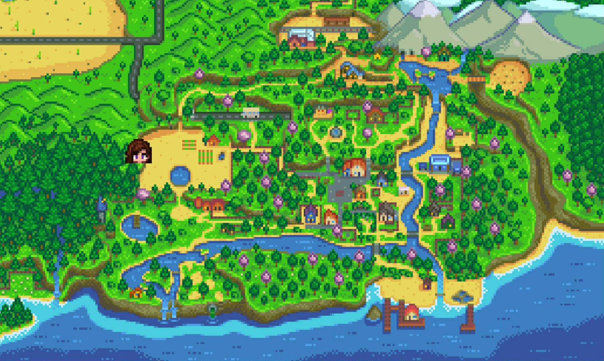
-YOUR FARM-
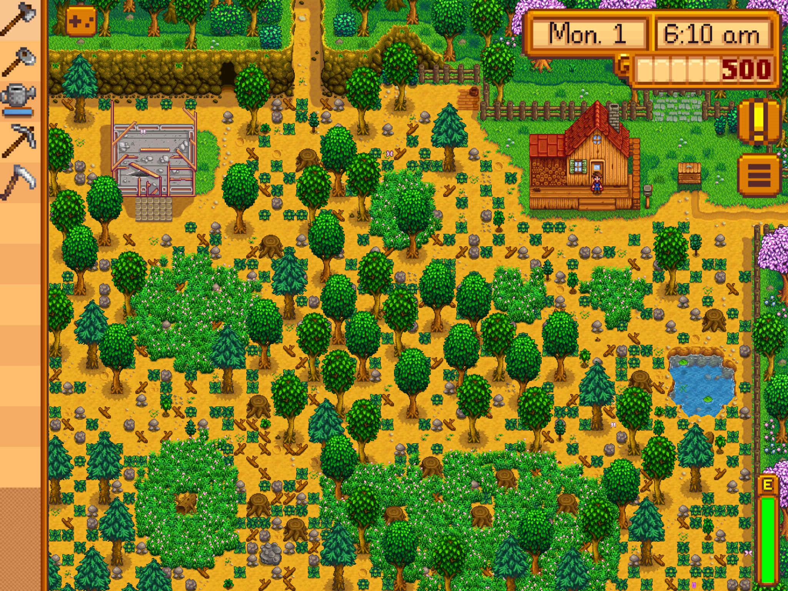
-SOUTH OF THE FARM-
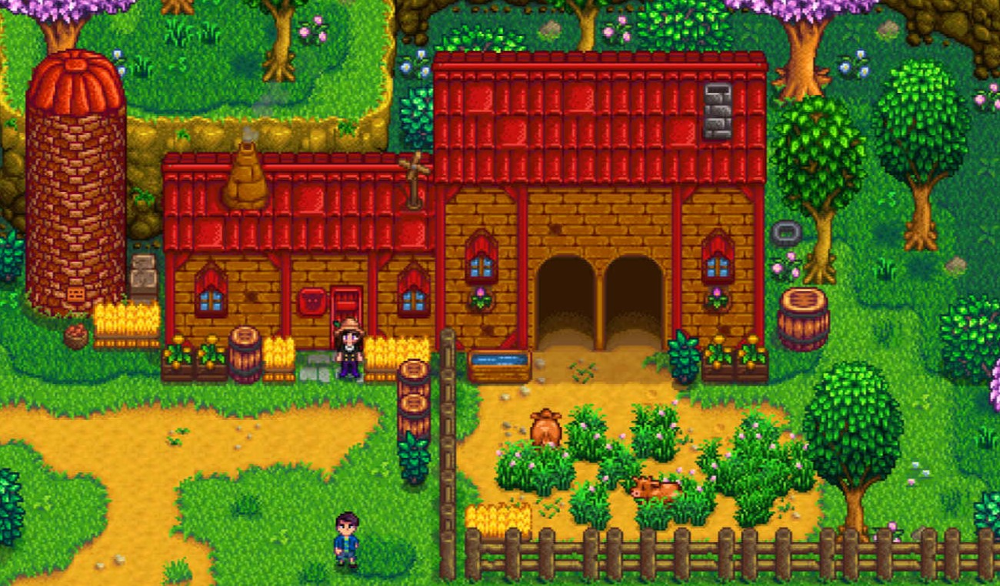
1. Marnie's Ranch
Marnie’s Ranch is the perfect place to get your hands on your first animals and all the supplies you need for taking care of them. It’s run by Marnie, who lives there with her niece and nephew, Jas and Shane. When the ranch is open, Marnie always ready to help you buy cows, goats, chickens, ducks, and more. The ranch is open Wednesday through Sunday from 9:00 AM to 4:00 PM, but the building itself is open until 6:00 PM giving you plenty of time to stop by to provice for your animals while exploring the valley. Visiting here is not just useful for your farm, but it’s also a great way to befriend Marnie, Jas, and Shane, and learning more about their story!
2. Leah's Cottage
Leah’s Cottage is a cozy little home tucked away in a cozy spot below Marnie's Ranch, and it perfect for anyone who would want to befriend Leah who loves art and nature. Leah lives here by herself, spending her days sculpting, painting, and foraging in the surrounding forest. The cottage is open to visitors every day from 10:00 AM to 6:00 PM, so you can stop by to chat or see her latest creations, IF you have unlocked a 2 heart friendship with her. The area around her home is peaceful, with natural beauty to explore. Spending time here gives you a glimpse into Leah’s quiet, creative life and lets you build a friendship with one of the valley’s most artistic residents.
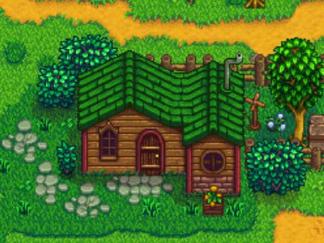
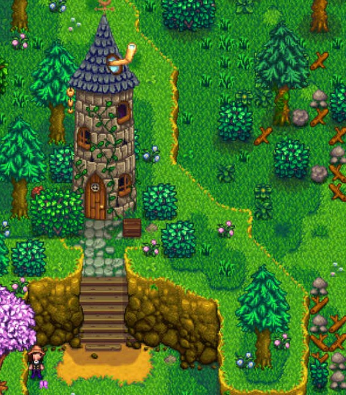
3. Wizard's Tower
The Wizard’s Tower is a mysterious and intriguing place located far West of the Cindersnap Forest, surrounded by a mysterious aura. It’s home to the Wizard, also known as M. Rasmodius, who spends his time studying mystical knowledge and letting newcomers in on the valley’s secrets. The tower is open to visitors every day from 6:00 AM to 11:00 PM, but you’ll need to find a golden scroll in the community center, or buy a JojaMart Membership. The area around the tower has a mystical feel, with tall trees and a small pond adding to its charm. Building a friendship with the Wizard also allows you to access the towers basement, after reaching 4 hearts with him. Visiting here is a chance to learn more about the valley’s magical side and meet one of its more mysterious residents.
-THE BUS STOP-
Working Bus Stop
The Bus Stop is a small but important spot east of your farm in the valley, where players can catch a ride to the Calico Desert. It’s a place you’ll visit often when you want to travel outside the valley. The bus stop is open every day from 10:00 AM to 5:00 PM, and it is operated by a fellow resident, Pam, giving you plenty of time to plan trips. Although it will only be available after you complete the Vault Bundle from the community center, costing you 42,500g or by buying the JojaMart upgrade. Even though it’s simple, it’s a gateway to a new adventure in the Desert where you can unlock the Oasis shop, the Desert Trader, the Casino, and the Skull Caverns. Stopping by here reminds you that there’s a whole new world beyond the valley waiting to be explored.
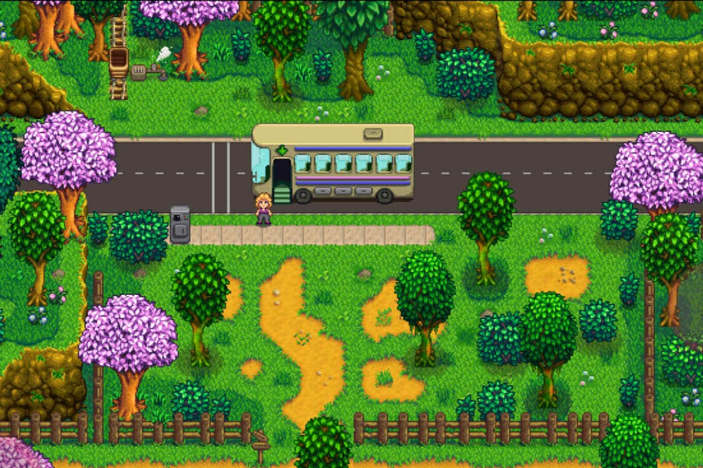
-PELICAN TOWN-
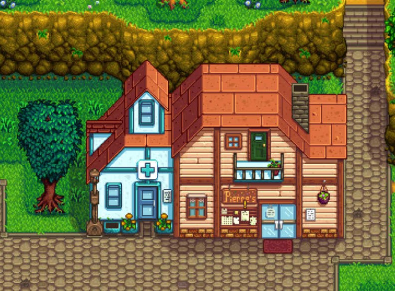
1. Harvey's Clinic & Pierre's General Store
Harvey’s Clinic and Pierre’s General Store are two essential spots in Stardew Valley. Harvey’s Clinic is run by Harvey, the caring town doctor, who lives there and helps anyone feeling unwell or anyone who wants to buy some medicine. Another resident, Maru, also works there as a nurse.The clinic is open every day from 9:00 AM to 3:00 PM, offering a calm, welcoming atmosphere where you can chat with one of the valley’s most compassionate residents or one of the valley's best inventors. Right beside it is Pierre’s General Store which is the heart of the valley's farming supplies, run by Pierre, with his wife Caroline and daughter Abigail living in the house behind the main room of the shop. It is open everyday except Wednesdays from 9:00 AM to 5:00 PM, the store is nice and welcoming, making it the perfect place to buy seeds, fertilizers, and essentials.
2. The Stardrop Saloon
The Stardrop Saloon is the valley’s most lively hangout spot, where villagers gather to eat, drink, and socialize. It’s run by Gus, who also lives there, making sure everyone feels welcome and well-fed. The saloon is open every day from 12:00 PM to 12:00 AM, so there’s plenty of time to stop by for a meal or a chat. Inside, you’ll find a warm, friendly atmosphere with music, games, and good food that make it the perfect place to unwind. During Fridays, most of the valley goes there in the evening to spend some time with each other. Shane and Pam are often the people you would see in the Saloon. Visiting the Stardrop Saloon is a great way to meet and befriend villagers, and experience one of the best places of Stardew Valley.
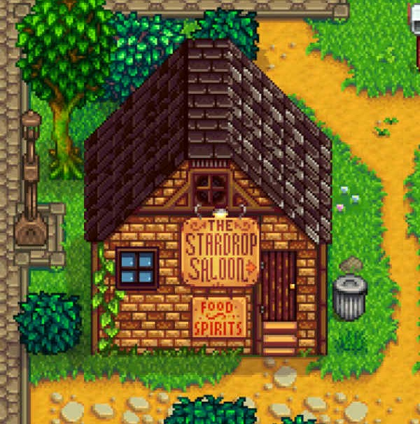
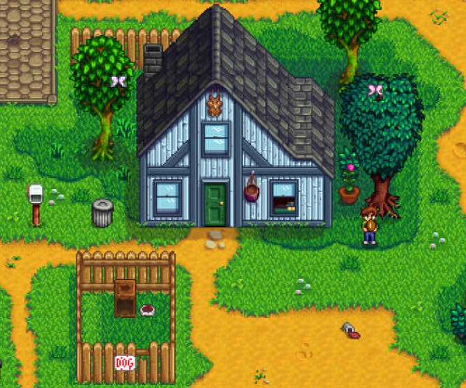
3. 1 River Road
1 River Road is the home of Alex, the valley’s aspiring athlete, who lives there with his grandparents, Evelyn and George. The house is cozy and simple, reflecting Alex’s active lifestyle and the family’s warm nature. It’s open to visitors every day from 8:00 AM to 8:00 PM, giving you a chance to stop by and chat with the family. The area around the home is quite messy but it adds onto the soul of this part of the valley, it also has a nice view of the river nearby. Visiting 1 River Road is a great way to meet and befriend Alex and his family.
4. Trailer
The Trailer is small and cozy home located just a few steps away from 1 River Road, where Pam and her daughter Penny live together. The trailer is open to visitors every day from 8:00 AM to 8:00 PM. Pam spends her time working as the town’s bus driver, while Penny focuses on teaching the children and helping around the valley. The area around the trailer is quiet, homey, and a bit messy. Visiting here is a great way to get to know and build a friendship with both Pam and Penny.
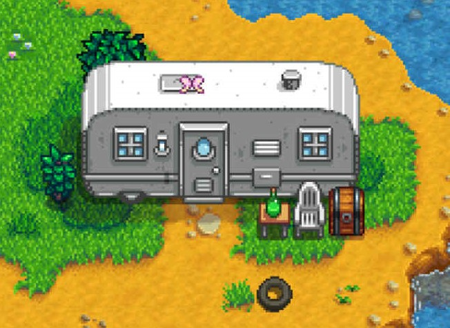
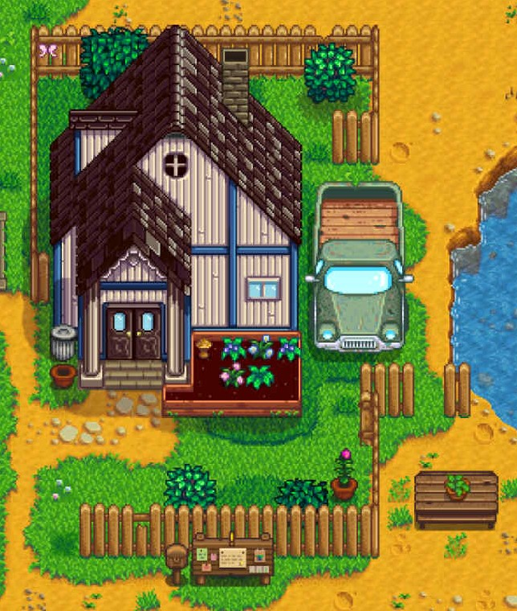
5. Mayor's Manor
The Mayor’s Manor is the grand home of Lewis, the mayor of Stardew Valley, where he lives alone. The manor is open to visitors every day from 8:00 AM to 8:00 PM, allowing you to stop by for a chat, claim rewards from tickets, or to complete quests. It has a formal, and well-kept atmosphere that shows Lewis’s role as the valley’s mayor. The surrounding area is quiet, making the manor stand out as an important landmark in town. Visiting the Mayor’s Manor is a great way to meet Lewis and learn more about the valley’s leader and his daily life.
6. Graveyard
The Graveyard is a quiet and peaceful area of Stardew Valley, located below the town square. It doesn’t have any residents living there, though Abigail often visits, but it serves as a place of remembrance for the valley’s past residents. The graveyard is open to visitors every day at all times, allowing you to pass through whenever you like. Its calm atmosphere, with gravestones and soft greenery, makes it a spot a bit away from the busier parts of town. Visiting the graveyard gives you a deeper sense of the valley's history and the lives that came before, with one gravestone labeled as "Our Beloved Mona", that adds onto the mystery of the Valley.
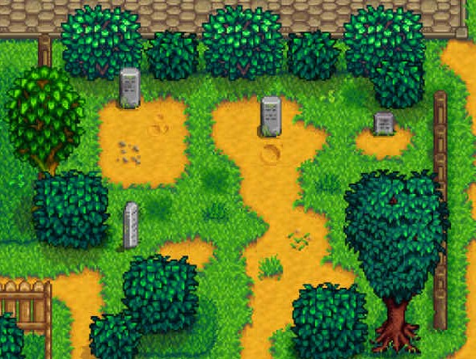
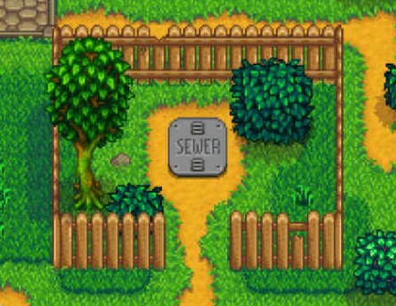
7. Sewer
The Sewer is a dark area to the left of the graveyard that you unlock later in the game once you get the Rusty Key from Gunther after donating 60 artifacts/minerals to the museum. It’s home to Krobus, a friendly shadow creature who sells rare items and shares unique dialogue. Once unlocked, the sewer is accessible at any time, day or night, making it easy to visit whenever you want. The space feels mysterious and a little eerie, but it’s surprisingly welcoming thanks to Krobus. Visiting the Sewer lets you explore a secret side of the valley and meet one of its most unusual residents.
8. 1 Willow Lane
1 Willow Lane is a small but semi-chaotic home in Pelican Town where Jodi lives with her family, including her husband Kent and their two sons, Sam and Vincent. The house has a warm, welcoming feel that reflects Jodi’s role as a caring mother and active community member. It is open to visitors everyday from 8:00 AM to 8:00 PM, making it easy to stop by and chat with the family. Each family member has their own routine, so you might see them coming and going throughout the day. Visiting 1 Willow Lane gives you a glimpse into everyday family life in Stardew Valley and helps you build friendships with the family that lives there.
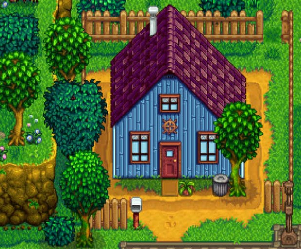
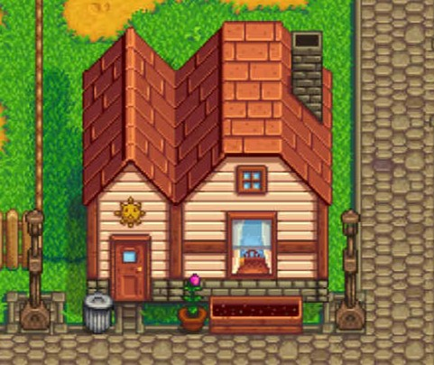
9. 2 Willow Lane
2 Willow Lane is the home of Emily and Haley, two sisters with very different personalities who live together in Pelican Town. Emily is creative and spiritual, often spending her time sewing and working as a bartender at the Stardrop Saloon, while Haley is more fashion-focused and loves photography. The house is open to visitors daily from 8:00 AM to 8:00 PM, giving you a chance to stop by and talk to both sisters. Their home feels bright and cozy, showing Emily’s creativity and Haley’s stylish tastes. Visiting 2 Willow Lane lets you get to know two of the valley’s most distinct and memorable sisters.
-THE BEACH-
1. Elliott's Cabin
Elliott’s Cabin is a small, rustic home located on the beach, slightly away from the rest of Pelican Town. Elliott lives there alone, using the quiet seaside setting as inspiration for his writing. The cabin is open to visitors daily from 10:00 AM to 6:00 PM, as long as Elliott is home and if you have reached 2 hearts with him. Its cozy interior and ocean views give it a peaceful, artistic atmosphere. Visiting Elliott’s Cabin lets you connect with one of the valley’s most poetic and passionate residents and enjoy a calm experience by the sea.
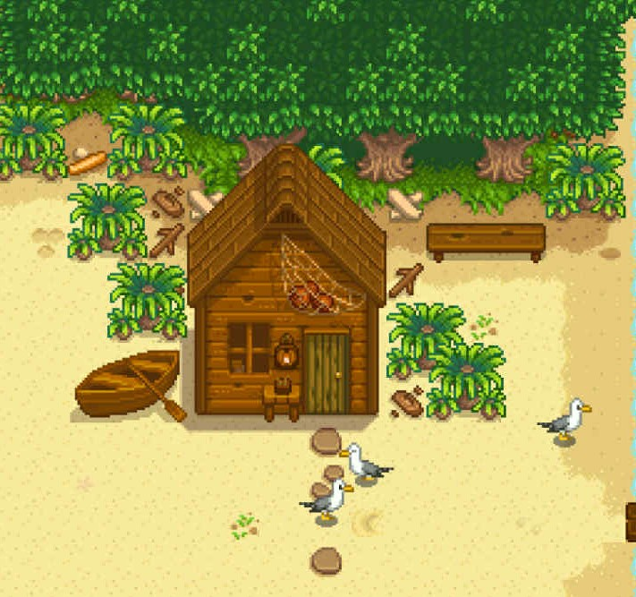
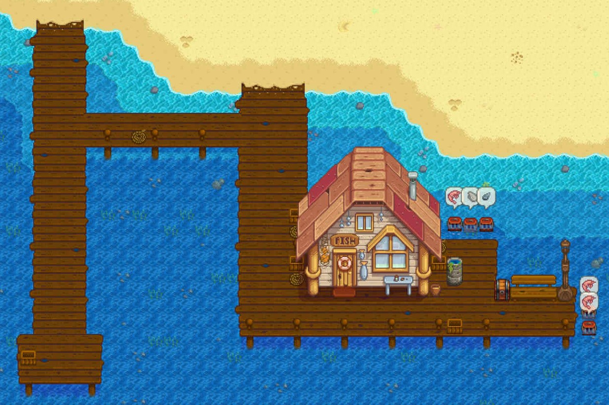
2. Fish Shop & Docks
The Fish Shop and Docks are located on the beach and are essential places for anyone interested in levelling up their fishing experience. The shop is run by Willy, who lives there and is always ready to sell fishing gear, bait, and advice. The Fish Shop is open every day from 9:00 AM to 5:00 PM, making it easy to stop by before heading out to fish. The nearby docks let you fish directly from the ocean and enjoy the calming sound of the waves. Visiting this area helps you improve your fishing skills and get to know one of the valley’s most experienced fisherman.
3. Tide Pools
The Tide Pools are a small coastal area beside the beach that you can access after repairing the wooden bridge using 300 pieces of wood. This area doesn’t have any residents, but it’s great for foraging items like coral, sea urchins, and shells. During rainy weather, the Old Marnier appears there from 6:00 AM to 7:00 PM, selling the Mermaid's Pendant, a marriage token to any Bachelor or Bachelorette. Once the bridge is repaired, the tide pools are accessible at any time of day. The shallow water, rocks, and ocean views give the area a calm, coastal feel. Visiting the tide pools is a rewarding way to explore more of the beach and gather valuable ocean resources early in the game.
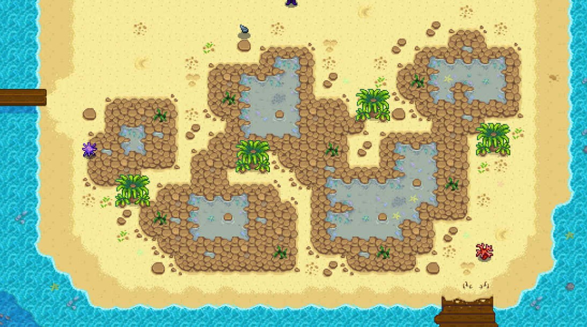
-EAST OF PELICAN TOWN-
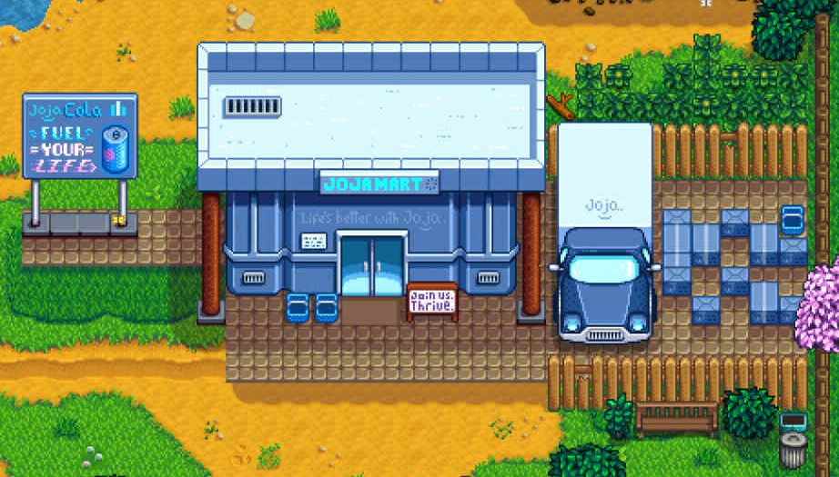
1. JojaMart
JojaMart is a large corporate store on the edge of Stardew Valley that offers an alternative place to buy seeds and supplies. It’s run by Morris, who lives in, and manages the store and represents the Joja Corporation. JojaMart is open every day from 9:00 AM to 11:00 PM, staying open later than most shops in town. The building has a cold, industrial feel that contrasts a lot with the valley aesthetic. Visiting JojaMart shows the tension between the Joja Corporation and the community-focused lifestyle of Stardew Valley.
2. Blacksmith
The Blacksmith is an essential shop in Pelican Town where you go to upgrade tools and break open geodes. It’s run by Clint, who also lives there and spends most of his time working at the forge in his shop. The Blacksmith is open every day from 9:00 AM to 4:00 PM, except on Fridays. The shop has a rugged atmosphere, with the sound of metalwork filling the space. Visiting the Blacksmith is key to improving your tools, which is valuable and important early game.
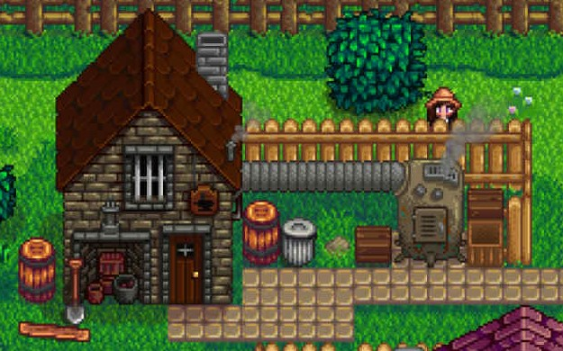
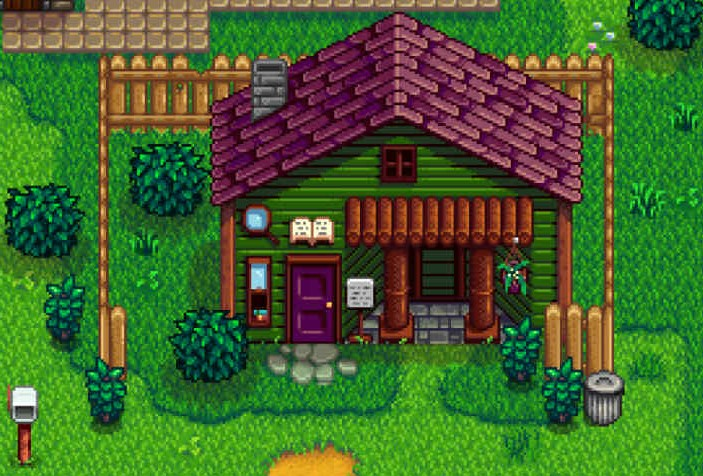
3. Stardew Valley Museum & Library
The Stardew Valley Museum and Library is a fascinating place where you can donate artifacts, minerals, and fossils you find while exploring the valley. It’s run by Gunther, who lives there and carefully takes care of every donation. The museum and library is open every day from 8:00 AM to 6:00 PM, giving you plenty of time to visit and learn about the valley’s history and natural treasures. The building has a quiet atmosphere, filled with displays and books that showcase the valley’s rich past. Visiting the museum is a great way to discover more about Stardew Valley, complete book and museum collections, and interact with one of its most knowledgeable residents.
-NORTH OF PELICAN TOWN-
1. Playground & Fountain
The Playground and Fountain area is found north of Pelican Town, offering a peaceful spot to relax and enjoy the view. There aren’t any residents living here, but it’s a popular place for villagers to pass through or stop by for a break, take Haley for example who you can find hanging out there from time to time. The area is open to visitors at all times, making it easy to explore whenever you like. With swings, slides, and the charming fountain, it has a cheerful, welcoming atmosphere. Visiting the playground and fountain is a nice way to enjoy a quiet moment in the valley while watching the town below.
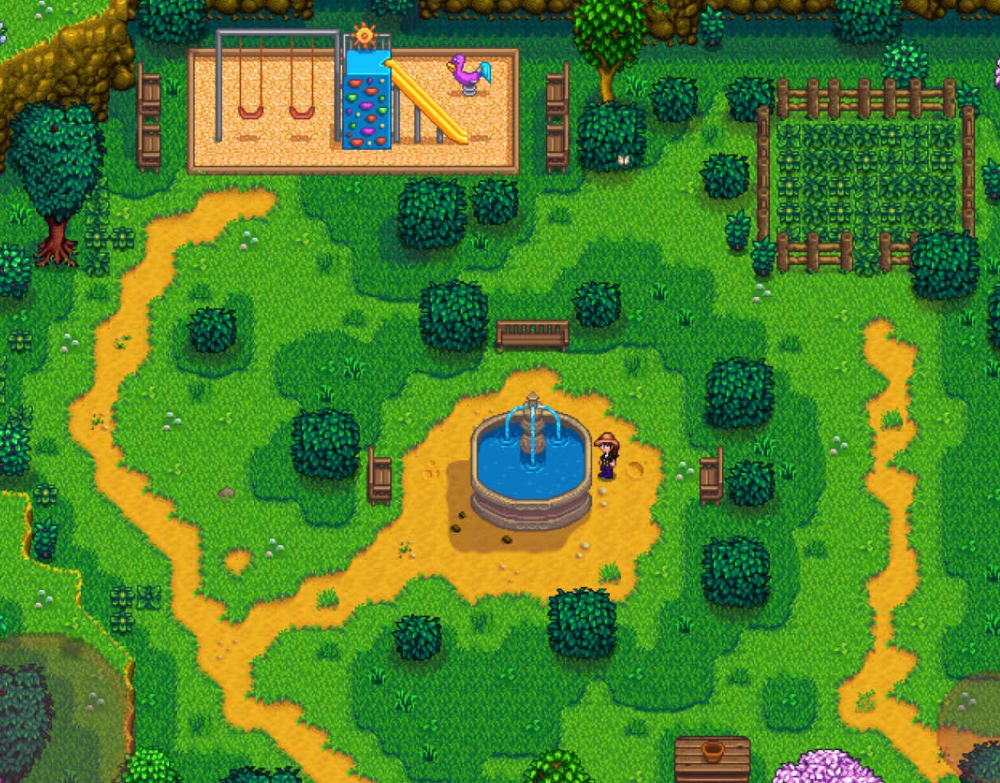
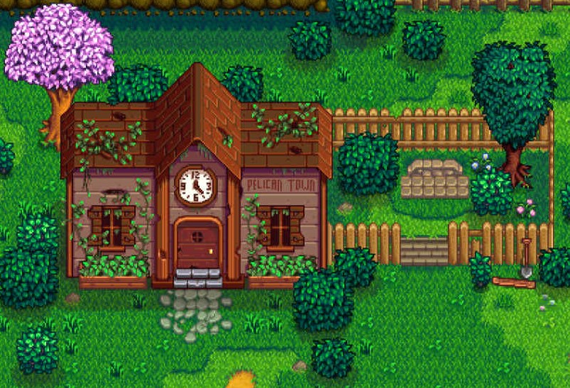
2. Community Center
The Community Center is a historic building in Pelican Town where after you unlock it, you get the privilege to complete bundles and restore the valley’s community center. It’s managed by the Junimos, magical creatures who live inside and help guide players in completing various tasks. The Community Center is open every day and any time, allowing plenty of time to work on bundles and interact with the Junimos. The building has a warm, rustic charm, filled with plants, artifacts, and community spirit. Visiting the Community Center is a great way to connect with the valley’s residents, help the environment, and unlock new areas of Stardew Valley.
-THE MOUNTAINS-
1. 24 Mountain Road/Carpenter's Shop
The 24 Mountain Road or Carpenter’s Shop is where you go to upgrade your farmhouse, build barns, coops, and other farm buildings. It’s run by Robin, who lives there with her husband Demetrius, stepdaughter Maru, her son Sebastian. The shop is open everyday except Tuesday from 9:00 AM to 5:00 PM, but closes early on Fridays (4:00 PM), making it easy to stop by while managing your farm. Inside, you’ll find a friendly, welcoming atmosphere where Robin can help bring your farm plans to life. Visiting the Carpenter’s Shop is essential for expanding and customizing your farm while getting to know and get closer with the family.
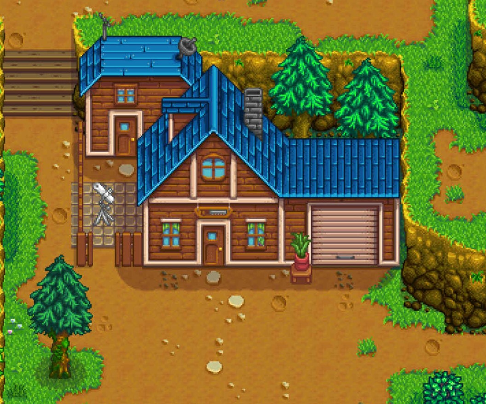
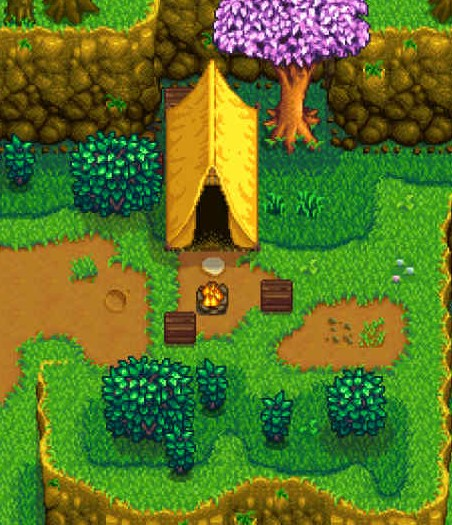
2. Tent
Linus’ Tent is a simple, humble home located in the mountains, above the Carpenter's Shop, and away from the bustle of Pelican Town. Linus lives there alone, preferring a quiet, and very natural lifestyle and spending his days foraging and fishing. The tent is open to visitors every day, giving you a chance to stop by, befriend, and chat with him. The area around the tent is peaceful and surrounded by wild plants and rocks, reflecting Linus’ close connection to nature. Visiting Linus’ Tent is a great way to learn more about one of the valley’s most independent and kindest residents.
-EAST OF THE MOUNTAINS-
1. The Mines
The Mines are a dangerous but rewarding area located in the mountains, where players can explore, fight monsters, and gather valuable resources like ores and gems. Inside, if you turn right, you will find the Dwarf living there. This are a great spot for adventurers and miners from the valley. The mines are accessible every day and any time, giving you plenty of time to explore their many levels. The deeper you go, the more challenging the monsters and the rarer the materials you can find. Visiting the mines is essential for upgrading tools, crafting, and taking on one of Stardew Valley’s most challenging adventures,
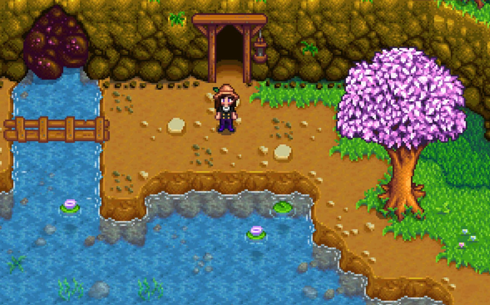
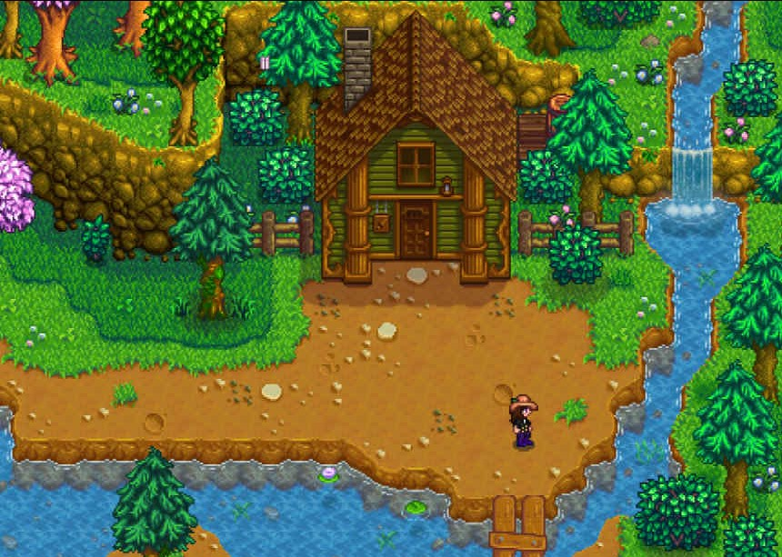
2. Adventurer's Guild
The Adventurer’s Guild is a hub for brave souls who explore the Mines and battle monsters in Stardew Valley. It’s run by Marlon and Gil, who both live there and welcomes players who have proven their skills in combat. The guild is open every day from 2:00 PM to 2:00 AM, allowing adventurers to stop by, sell loot, and buy weapons or gear. Inside, you’ll find a warm, adventurous atmosphere filled with trophies and supplies for fighters. Visiting the Adventurer’s Guild is a great way to improve your combat skills and connect with the valley’s most brave residents.
3. The Quarry
The Quarry is a rugged, open area located far East in the mountains, where players can mine rocks and gather valuable ores and gems. There aren’t any residents living there, but it’s an good for getting items for upgrading tools and crafting. The quarry is accessible every day and any time to collect resources. Though it is only unlocked after completing a bundle from the community center. Its rocky terrain and natural surroundings give it an adventurous feel. Visiting the Quarry is essential for any farmer or miner looking to expand their crafting and upgrade options in Stardew Valley.
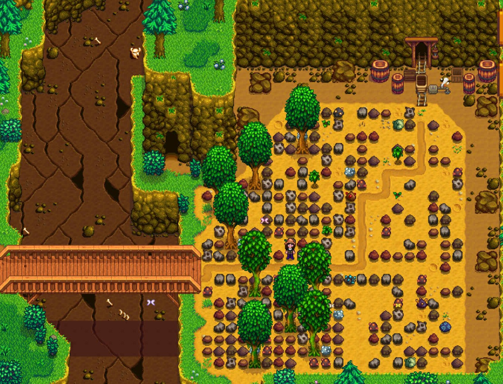
-NORTH OF THE MOUNTAINS-
Railroad & Spa
The Railroad and the Spa are two unique locations North of Stardew Valley, each offering a different kind of adventure or relaxation. The Railroad runs along the north of the valley and sometimes a train will pass by and drop materials there. The Spa, tucked away in the mountains, is a serene hot spring where you can relax and restore energy after a long day. The Spa is open all day, everyday. Neither location has residents living there, but both are accessible daily. Visiting these spots lets you explore new areas, and enjoy peaceful moments away from the valley.
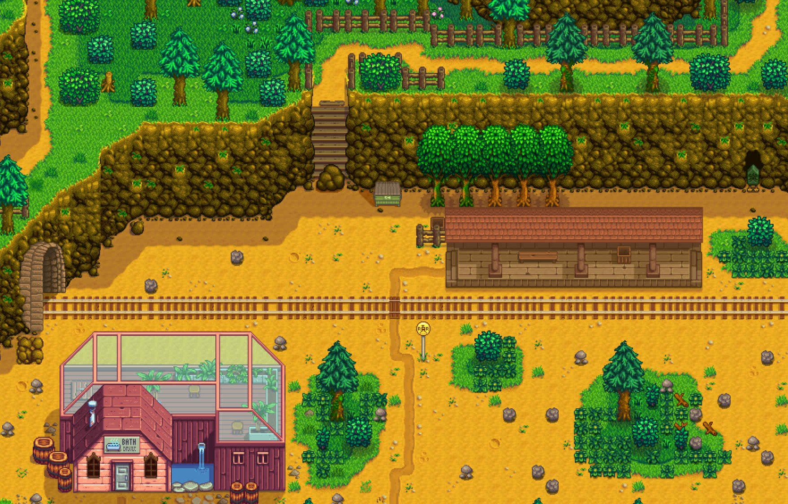